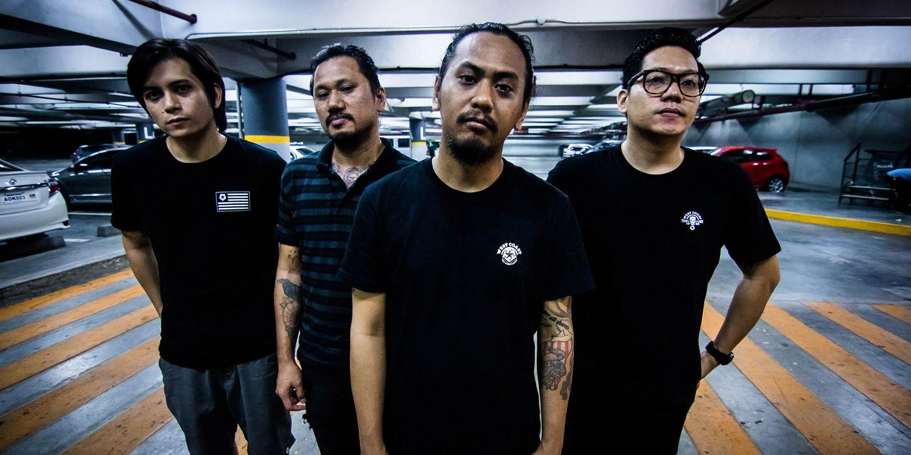
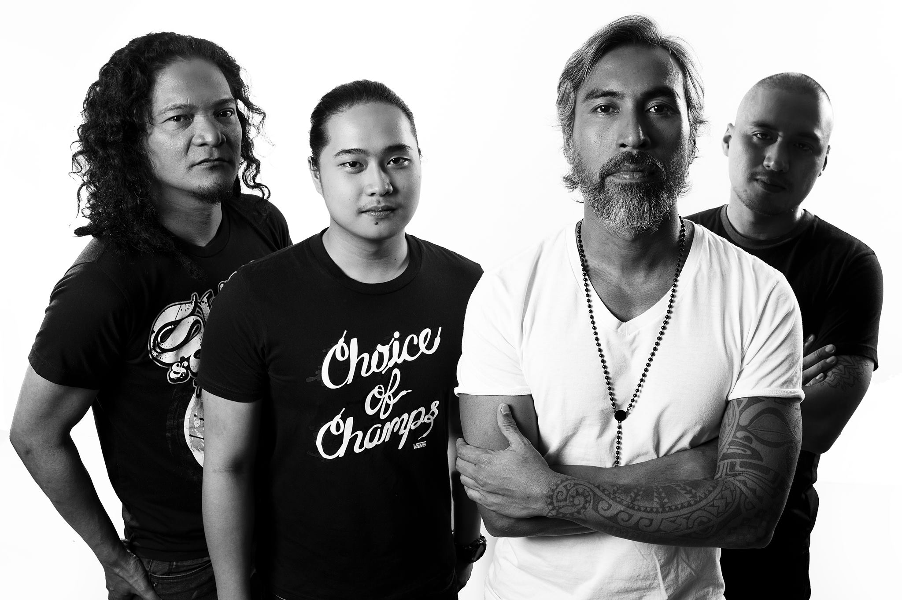
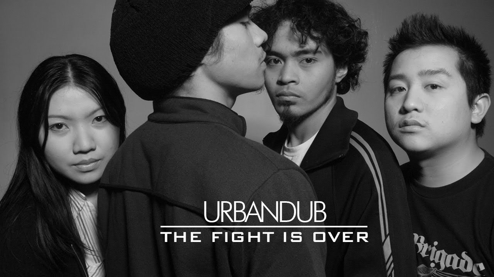

Typecast is an alternative rock band from the Philippines. Originally an underground act, they have surfaced on the mainstream Philippine music scene, while managing to hold on to their underground roots.

Franco is a rock band from the Philippines formed in 2008. The band had its beginnings as a supergroup with members from iconic Filipino bands, consisting of Franco Reyes on vocals, Gabby Alipe on guitar, Paolo Toleran on guitar, Buwi Meneses on bass guitar, and JanJan Mendoza on drums

Urbandub is a rock band from Cebu City, Philippines. Since its inception in 2000, the band's line-up consisted of Gabby Alipe, John Dinopol, Lalay Lim, and JanJan Mendoza who joined in 2003. Urbandub is the first indie band in the Philippines to release albums nationwide with the assistance of a major label.